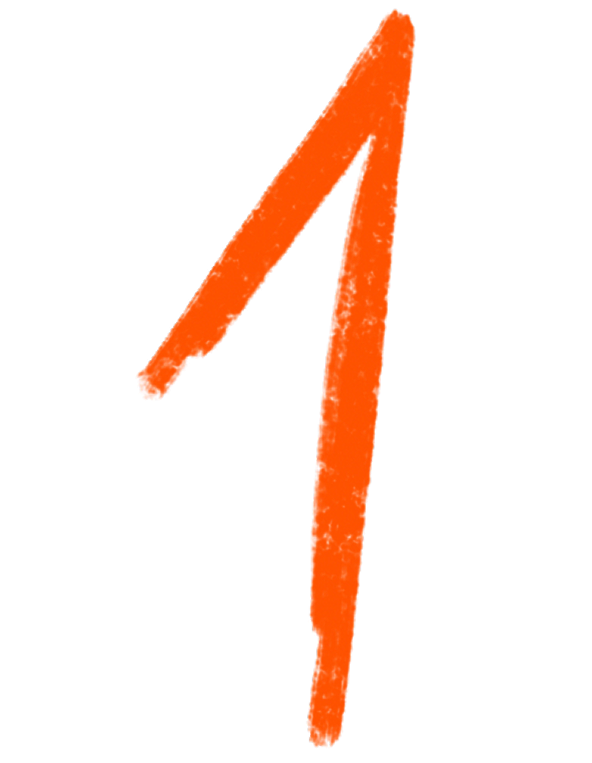
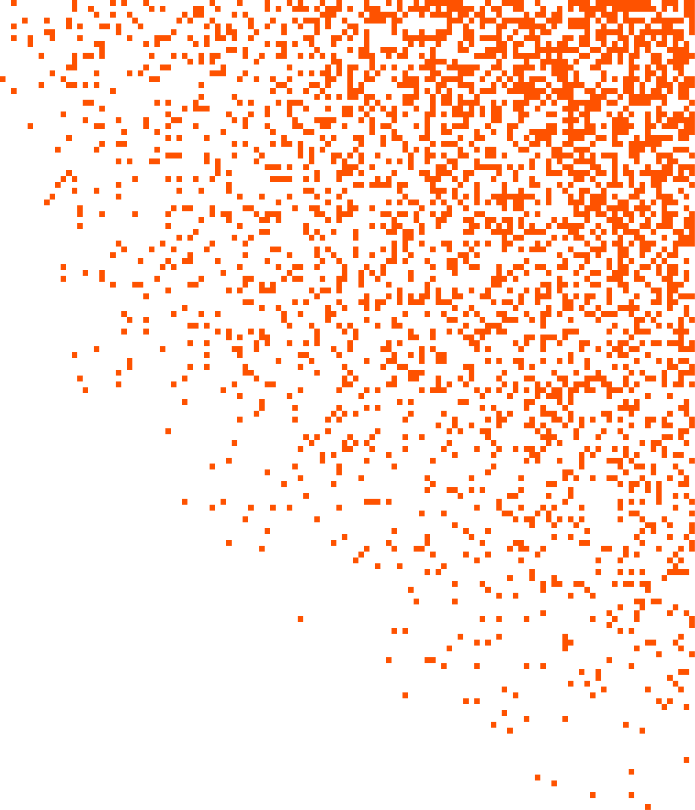
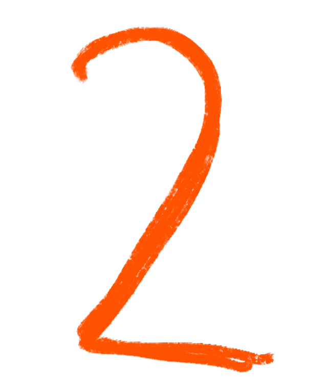
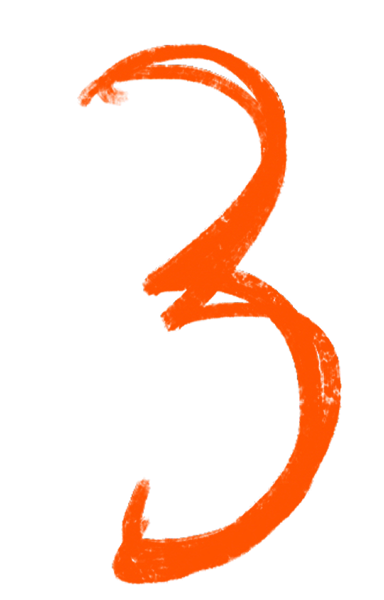
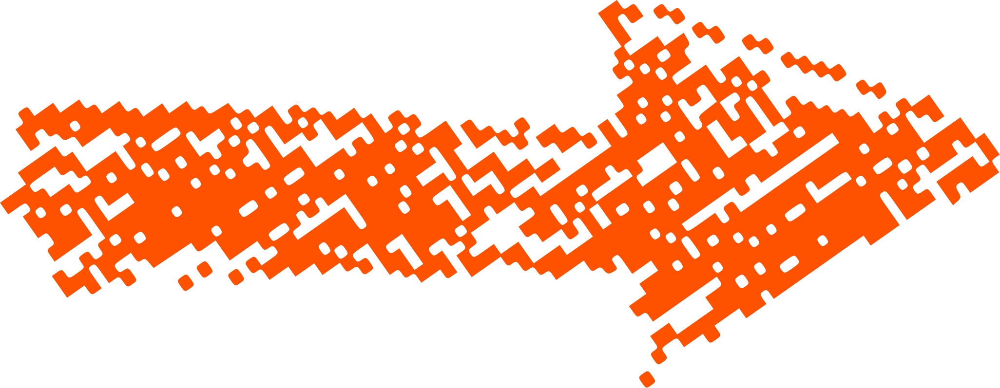

Warsztaty
i strategia
Wyciągam z twojego zespołu to, co już w nim jest — i pomagam to zamienić w strategię.

Przemo · Strateg doświadczeń · Konsultant · Facylitator
„People will never forget
how you made
them feel."
Czym się zajmuję

Wyciągam z twojego zespołu to, co już w nim jest — i pomagam to zamienić w strategię.

Każdy punkt styku z klientem ma znaczenie. Projektuję, żeby te punkty coś budowały.

Zewnętrzny strateg, który rozumie twój kontekst od środka — bez zatrudniania kolejnej osoby.

Dlaczego to ma znaczenie
„To zmieniło sposób, w jaki patrzymy na klientów i na naszą markę."
Polecenie od znajomego to najtańsza i najskuteczniejsza forma reklamy. Ale żeby ludzie polecali — muszą mieć o czym opowiadać.
AI potrafi dziś wygenerować strategię marki. Szybko i tanio. Czego nie potrafi: wyczuć, kiedy założyciel szuka słów i nie jest pewien co powiedzieć. Połączyć mechanikę eventową z tym, jak ludzie zapamiętują. Poprowadzić grupę przez proces tak, żeby doszli do wniosków, których sami by nie osiągnęli.
To jest właśnie ta robota.
Co się zmienia